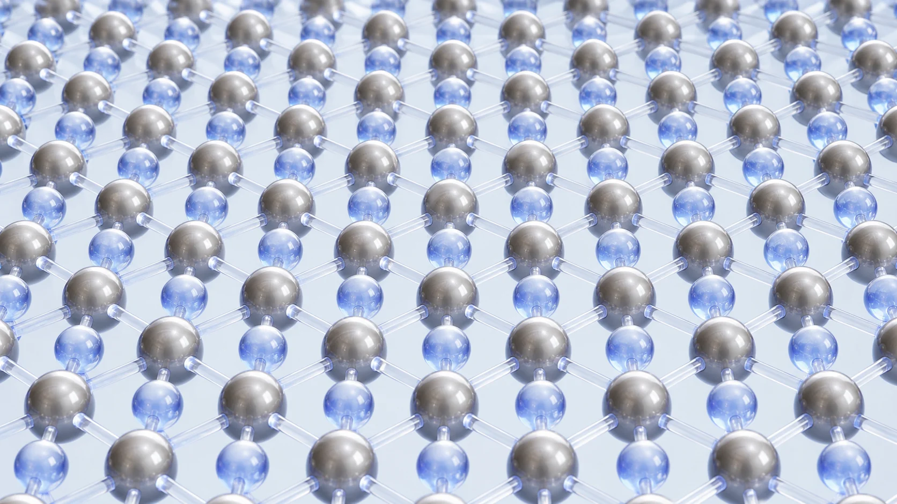
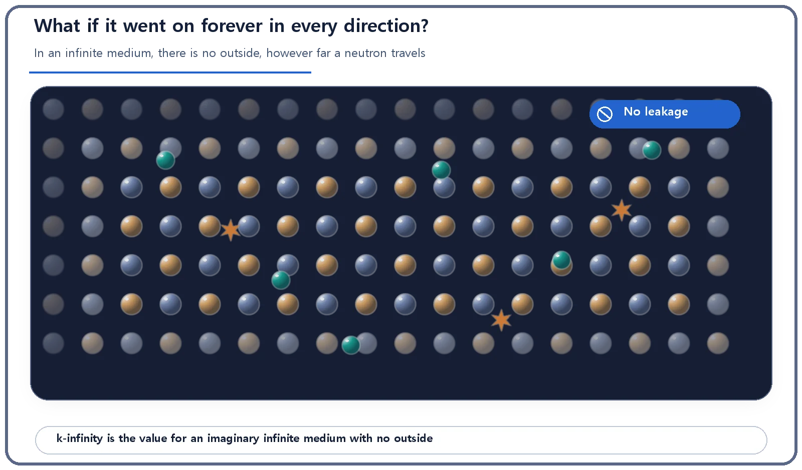
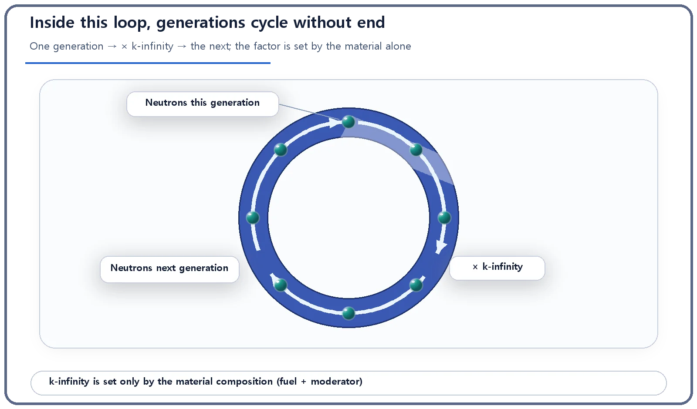

Neutron Physics & the Core · 083
How Fast Do Neutrons Multiply in a Room With No Exit? — The Infinite Multiplication Factor, k-infinity
Imagine a reactor material that goes on forever, so no neutron can ever escape: how much the neutrons multiply there depends on the material alone.

k-infinity is how many times the neutron population multiplies from one generation to the next in an imaginary infinite medium where no neutron can leak away. Because size and shape drop out, it depends only on the material: fuel enrichment and the type and proportion of moderator. It describes the material mix, not the current state of a real reactor.
A room with no exit
Picture a room with no walls and no end, stretching forever in every direction. No doors, no windows; walk as far as you like and you never hit a wall. The room is packed, out to the horizon, with exactly the same material: nuclear fuel and a moderator (a material that slows neutrons down) mixed in a fixed ratio, repeating identically in all directions.
Release a single neutron in this imaginary room. However far it flies, there is no "outside," so it cannot escape. Nuclear engineers call this imaginary space an infinite medium, and the number that tells you how many times the neutron population multiplies from one generation to the next inside it is the infinite multiplication factor, k-infinity (k∞).
The neutron budget, moved to a world without leakage
Inside a reactor core, there is a kind of household budget for neutrons: neutrons newly born from fission (income) are compared with neutrons that are absorbed or escape from the core (spending). k-infinity moves that budget into an imaginary world where leakage doesn't exist as a spending item at all, leaving only production and absorption to decide the next generation's balance.

So only the material is left
Once you assume an infinite medium, the size and shape of the core drop out of the calculation completely. The value of k-infinity is decided by the material: the enrichment of the fuel (how much uranium-235, the isotope that fissions readily, it contains) and the type and proportion of moderator (light water, heavy water, graphite and so on, and how much of it is mixed in).
Think of brewing coffee. Change the ratio of grounds to water and the strength changes, whatever the size of the cup. k-infinity works the same way: however big or small the core, how good a fuel-and-moderator mix is at multiplying neutrons is fixed purely by that mix.
In one line
Neutrons in the next generation = neutrons in this generation × k-infinity
| k-infinity | What happens in the imaginary infinite medium |
|---|---|
| Greater than 1 | With nowhere to leak, the neutron population grows without limit, generation after generation. |
| Exactly 1 | The population stays the same from one generation to the next. |
| Less than 1 | The population shrinks with each generation. |
These three cases do not tell you what state a real reactor is in right now. They only show how good the material mix is, in theory, at multiplying neutrons in a world with no outside. A real reactor has a finite size, and some neutrons really do leak out of the core.

Easily confused neighbors
"If k-infinity is greater than 1, the reactor is running away." It isn't. k-infinity is a theoretical indicator fixed only by the material composition, in an imaginary world with no leakage. A real core's state is judged with a separate value that accounts for size and leakage too: the effective multiplication factor (k-effective). One describes the theoretical property of the material; the other describes what is actually happening right now in a core of a given size.
"A bigger k-infinity means more power or better efficiency." Also a misconception. k-infinity measures neither power output nor generating efficiency; it only indicates how good a fuel-and-moderator mix is at multiplying neutrons.
So why does it matter?
k-infinity is used mainly in the very early stages of reactor design. When developing a new fuel or choosing a moderator ratio, engineers first calculate, for a single fuel rod or a small lattice of fuel rods, what k-infinity the mix would give with no leakage. Comparing material mixes this way lets them move on to deciding the real core's size and shape, accounting for the leakage that comes with it, and judging what the core needs to actually reach criticality. k-infinity is less a number watched moment by moment in operation and more a reference value for gauging a material's potential at the start of design.
The takeaways
k-infinity is the generation-to-generation multiplication of neutrons in an imaginary infinite medium with no leakage, set only by the material composition. It does not describe a real reactor's current state. The value that also accounts for leakage in a real, finite core is k-effective.